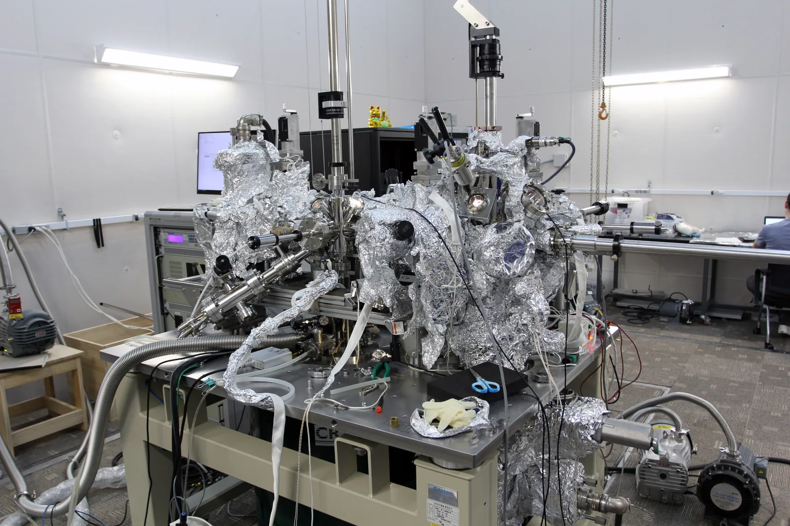

Aaltomekaaninen atomimalli ja orbitaalit
Miksi kemian kirjassa atomin elektroni piirretään sumeaksi pilveksi eikä pieneksi palloksi, joka kiertää ydintä rataa pitkin?
Pohjatiedot
- Yksi kerrallaan lähetetyt elektronit osuvat kaksoisraon taakse kukin yhteen kohtaan, mutta monesta osumasta syntyy interferenssikuvioluku Valo ja elektroni aaltoina ja hiukkasina
- Vetyatomin energiatasot ovat $E_n = -\tfrac{13{,}6\,\text{eV}}{n^2}$. Siirtymässä syntyvän fotonin energia on tasojen energioiden erotusluku Vetyatomin energiatasot ja Bohrin malli
Ydinpolku: tee vaiheet järjestyksessä. Ydinpolulla ei vain lasketa. Siinä myös tutkitaan, selitetään ja piirretään kuvaajia. Valinnainen-tehtävät ovat lisäharjoittelua. Valinnaisia tehtäviä on 5.
Luvun tärkeät käsitteet Vapaaehtoinen
Tutustu luvun tärkeisiin käsitteisiin. Voit kirjoittaa niiden merkitykset sinulle vahvimmalla kielellä tai useammalla kielellä.
- Aaltomekaaninen atomimalli
- Nykyinen atomimalli. Elektronin tilaa kuvaa aalto, joka levittäytyy ytimen ympärille. Elektronilla ei ole rataa.
- Orbitaali
- Alue ytimen ympärillä, jonka sisällä elektroni havaitaan valitulla todennäköisyydellä.
- Todennäköisyystulkinta
- Aalto ei kerro, missä elektroni on. Se kertoo, kuinka todennäköisesti elektroni havaitaan kussakin kohdassa.
Pohdinta
Kemian kirjan sivulla hiiliatomin elektronit eivät kierrä ydintä siistejä ratoja pitkin. Ne on piirretty sinisinä pilvinä ja kaksilohkoisina muotoina. Kuvatekstissä puhutaan alueesta, jossa elektroni todennäköisesti havaitaan. Fysiikassa vetyatomin energiatasot laskettiin kuitenkin Bohrin mallilla, jossa elektroni kiertää ydintä ympyrärataa.
Mitä orbitaalin kuva oikeastaan esittää, jos se ei ole elektronin rata?
Valinnainen Kertaa: elektroni kaksoisraossa
Ennusta
Tee ennusteet ennen tutkimista 2 kysymystä
Ennuste 1: orbitaalin raja
Ennuste 2: kuinka kaukana ytimestä?
Tutki
Simulaatio
Käyttöohje
Valitse elektronin tila ($1\text{s}$, $2\text{s}$ tai $2\text{p}$) ja mittausten määrä $N$. Jokainen piste on yhden paikanmittauksen tulos. Liukusäädin valitsee rajan kynnyksen $p$. Raja piirretään niin, että sen sisällä elektroni havaitaan todennäköisyydellä $p$. Rajan sisään osuneet pisteet ovat sinisiä ja ulkopuolelle osuneet harmaita. Oikealla oleva histogrammi näyttää, kuinka monta osumaa on kullakin etäisyydellä ytimestä $0{,}02\,\text{nm}$:n väleissä. Histogrammi on pylväskuvio. Tummin pylväs on yleisin etäisyys, ja katkoviiva on mallin odotusarvo eli odotettu keskimääräinen luku. Uusi mittaussarja arpoo uudet mittaustulokset. Kun $N$ kasvaa, aiempiin osumiin lisätään uusia.
Mallin oletukset
Malli on vetyatomi, jonka elektroni on $1\text{s}$-, $2\text{s}$- tai $2\text{p}$-tilassa. Jokainen mittaus tehdään uudessa samassa tilassa olevassa atomissa. Tulos arvotaan tilan todennäköisyysjakaumasta. Kuva on läpivalaisu eli läpikuultava projektio: kolmiulotteiset mittaustulokset ja raja on piirretty yhteen tasoon. Siksi osa rajan kohdalle piirretyistä harmaista pisteistä on todellisuudessa rajan edessä tai takana. Tilassa $2\text{s}$ solmupallon ympärillä on rako, joka ei kuulu alueeseen. Siksi sen raja piirretään kolmena ympyränä. Tilan $2\text{p}$ lohkot ovat pystysuunnassa. Todellisessa kokeessa yksittäisen atomin elektronin paikkaa ei mitata näin suoraan. Malli havainnollistaa todennäköisyystulkintaa.
Laskennan selitys
Osuus rajan sisällä on $k : N$, missä $k$ on sinisten pisteiden määrä. Raja on pinta, jolla todennäköisyystiheys on kaikkialla sama. Sen sisään jää todennäköisyys $p$. Rajan suurin etäisyys $R$ mitataan ytimestä siihen suuntaan, johon alue ulottuu kauimmas. Tilassa $2\text{p}$ se on lohkon kärki. Yleisin etäisyys on histogrammin korkeimman pylvään keskikohta. Pituudet on laskettu Bohrin säteen $0{,}0529\,\text{nm}$ avulla.
Mittaa elektronin paikka yhä uudelleen. Katso, miten satunnaisista osumista syntyy orbitaali.
Koe 1: yksi mittaus vai monta?
Testaa ennuste 1. Tila on $1\text{s}$ ja rajan kynnys on $90\,\%$. Kasvata mittausten määrää $N$. Kirjaa jokaisella määrällä rajan sisälle ja ulkopuolelle osuneet mittaukset sekä osuus rajan sisällä. Kokeile myös, mitä Uusi mittaussarja tekee pienellä ja suurella $N$:llä.
Alkutila: tila: $1\text{s}$-orbitaali, mittauksia $N$ = $10$, rajan kynnys $p$ = $90\,\%$. Vakiona: tila, rajan kynnys $p$. Muutetaan: mittauksia $N$.
| mittauksia $N$ | sisällä $k$ | ulkopuolella | osuus sisällä $(\%)$ |
|---|
Lisää tutkittavaa 2 tehtävää
Koe 2: kuinka kaukana elektroni havaitaan?
Testaa ennuste 2. Mittauksia on $5000$ ja rajan kynnys on $90\,\%$. Vaihda elektronin tilaa. Kirjaa jokaisesta tilasta histogrammin yleisin etäisyys ja orbitaalin rajan suurin etäisyys ytimestä.
Alkutila: tila: $1\text{s}$-orbitaali, mittauksia $N$ = $5000$, rajan kynnys $p$ = $90\,\%$. Vakiona: mittauksia $N$, rajan kynnys $p$. Muutetaan: tila.
| tila | yleisin $r$ $(\text{nm})$ | $R$ $(\text{nm})$ |
|---|
Johtopäätös: mitä orbitaali kertoo?
Kirjoita taulukoidesi perusteella: Mitä yksittäinen mittaus kertoo elektronin paikasta? Mikä näkyy vasta monesta mittauksesta? Mitä orbitaalin $90\,\%$:n raja tarkoittaa? Miten $1\text{s}$-orbitaali eroaa $2\text{s}$- ja $2\text{p}$-orbitaaleista?
Mallivastaus
Yksittäinen mittaus antaa yhden satunnaisen pisteen. Pienillä $N$:n arvoilla rajan sisään osuneiden osuus vaihteli selvästi, ja uusi mittaussarja antoi eri luvut. Kun mittauksia oli $1000$ tai $5000$, osuus asettui lähelle $90\,\%$:a. Raja on siis todennäköisyysraja: noin kymmenesosa osumista jää sen ulkopuolelle. Mallin arvojen mukaan $1\text{s}$-elektronin yleisin etäisyys ytimestä oli noin $0{,}05\,\text{nm}$ eli Bohrin radan säteen verran. Orbitaalin $1\text{s}$ raja oli $0{,}14\,\text{nm}$:n päässä. Tiloissa $2\text{s}$ ja $2\text{p}$ yleisin etäisyys oli noin $0{,}2$–$0{,}3\,\text{nm}$ ja raja ulottui noin $0{,}48\,\text{nm}$:n päähän. Kuoren $n = 2$ elektroni havaitaan siis keskimäärin kauempana ytimestä, ja sen energia on suurempi.
Arvioi oma vastauksesi
Merkitse kohdat, jotka sinun vastauksessasi jo on.
Kertaa asia teoriasta ja harjoittele tehtävillä.
Teoria
Ydinajatus
Radasta aaltoon
Bohrin malli antoi vetyatomin energiatasot oikein (luku Vetyatomin energiatasot ja Bohrin malli). Sen kuva on kuitenkin yksinkertainen: pieni pallo kiertää ydintä ympyräradalla. Tämä kuva ei kestä lähempää tarkastelua. Malli ei kerro, miksi vain tietyt radat ovat sallittuja. Se ei myöskään toimi atomeille, joissa on monta elektronia.
Luvussa Valo ja elektroni aaltoina ja hiukkasina nähtiin lisäksi, että elektronit muodostavat kaksoisraon taakse interferenssikuvion, vaikka ne lähetetään yksi kerrallaan. Elektronin liikettä pitää siis kuvata aallolla. Aaltomekaanisessa atomimallissa elektronin tilaa atomissa kuvaa aalto, joka levittäytyy ytimen ympärille. Elektronilla ei ole rataa.
Sallitut tilat ovat seisovia aaltoja
Kitaran kieli on kiinni molemmista päistään. Siksi kieleen syntyy vain sellaisia seisovia aaltoja, joissa kielen päät ovat solmukohtia. Solmukohta on kohta, jossa kieli pysyy paikallaan. Värähtelytapoja on siksi vain tietyt: yksi kupu, kaksi kupua, kolme kupua ja niin edelleen. Kupukohta on kohta, jossa kieli värähtelee eniten.
Ytimen sähköinen vetovoima sitoo elektronin. Elektronin aallon pitää samaan tapaan sopia ytimen ympärille. Pysyviä tiloja syntyy vain tietyillä aallon muodoilla, ja jokaisella muodolla on oma energiansa. Energian kvantittuminen ei siis ole erillinen oletus kuten Bohrin mallissa. Kvantittuminen tarkoittaa, että energia voi olla vain tietyissä arvoissa. Se seuraa siitä, että sidottu aalto voi olla vain seisova aalto. Kielessä lisäsolmu nostaa värähtelyn taajuutta. Vetyatomissa tilan energia on sitä suurempi, mitä enemmän aallossa on solmuja. Monen elektronin atomissa tämä pätee saman muotoisiin tiloihin (s, p, …).
Atomissa aalto on kolmiulotteinen, joten sen solmut ovat pintoja. Solmupinnalla elektronia ei havaita. Alimman tilan, $1\text{s}$-tilan, aallossa ei ole solmua. Kuoren $n = 2$ tiloissa on yksi solmu. Kuori tarkoittaa tiloja, joilla on sama pääkvanttiluku. Tilassa $2\text{s}$ solmu on pallopinta ytimen ympärillä. Tilassa $2\text{p}$ solmu on taso, joka kulkee ytimen kautta.
Tilan nimen numero on pääkvanttiluku $n$. Solmuja on yhteensä $n - 1$. Kirjain kertoo aallon muodon. s-orbitaali on pallosymmetrinen eli samanlainen kaikkiin suuntiin. p-orbitaalissa on kaksi lohkoa ytimen vastakkaisilla puolilla.
Todennäköisyystulkinta
Aalto ei kerro, missä elektroni on. Se kertoo, missä elektroni havaitaan todennäköisesti. Kun elektronin paikka mitataan, tulos on aina yksi piste. Yksittäistä tulosta ei voi ennustaa. Amplitudi on aallon suurin poikkeama tasapainosta. Aallon amplitudin neliö kertoo, kuinka todennäköisesti elektroni havaitaan pienessä tilavuudessa kunkin kohdan ympärillä. Tämä on aaltomallin todennäköisyystulkinta.
Jakauma tulee näkyviin vasta, kun mittaus toistetaan monessa samassa tilassa olevassa atomissa. Jos $N$ mittauksesta $k$ osuu johonkin alueeseen, todennäköisyys havaita elektroni siinä on likimain
$$P \approx \frac{k}{N}$$
missä $P$ on todennäköisyys, $k$ alueeseen osuneiden mittausten määrä ja $N$ kaikkien mittausten määrä. Arvio tarkentuu, kun $N$ kasvaa. Mittausten välillä elektronilla ei ole rataa, jonka voisi piirtää.
Orbitaali kuvaa elektronin kvanttitilaa
Kun mittaustulokset merkitään pisteiksi, syntyy elektronipilvi. Pilvi on tihein siellä, missä elektroni havaitaan todennäköisimmin. Pilvellä ei ole terävää reunaa. Orbitaali kuvaa elektronin kvanttitilaa. Kvanttitila on atomin sallittu seisova aalto. Se määrää, millä todennäköisyydellä elektroni havaitaan eri kohdissa. Kuvissa orbitaali näytetään alueena, jonka sisällä elektroni havaitaan valitulla todennäköisyydellä. Tavallisesti todennäköisyys on $90\,\%$. Piirretty alue on vain havainnollistus. Se ei ole orbitaalin määritelmä.
Raja on sovittu kynnysarvo eikä seinä. Noin kymmenesosa mittauksista osuu sen ulkopuolelle. Vetyatomin $1\text{s}$-orbitaalin $90\,\%$:n raja on pallo, jonka säde on $0{,}14\,\text{nm}$. Esimerkiksi $2\text{p}$-orbitaali on yksi vetyatomin tiloista.
Pilvi on tihein ytimen kohdalla, mutta yleisin etäisyys ytimestä ei ole nolla. Ohueen pallokuoreen kauempana ytimestä mahtuu enemmän tilavuutta kuin pieneen palloon aivan ytimen ympärillä. Siksi $1\text{s}$-elektroni havaitaan useimmin noin $0{,}053\,\text{nm}$:n etäisyydellä. Se on sama kuin Bohrin mallin pienimmän radan säde. Aaltomallissa Bohrin rata on yleisin etäisyys, ei reitti, jota elektroni kulkee.

Kuoret, orbitaalit ja energiatasot
Vetyatomissa tilan energia riippuu vain pääkvanttiluvusta $n$. Aaltomalli antaa samat energiatasot kuin Bohrin malli:
$$E_n = -\frac{13{,}6\,\text{eV}}{n^2}$$
missä $E_n$ on elektronin energia (eV) kuorella $n = 1, 2, 3, \ldots$ Samaan pääkvanttilukuun kuuluvat tilat muodostavat elektronikuoren. Kuorella, jonka pääkvanttiluku on $n$, on $n$ alikuorta. Alikuori on kuoren osa, jossa orbitaaleilla on sama muoto. Ensimmäiset alikuoret merkitään kirjaimilla s, p, d ja f. Niissä on $1$, $3$, $5$ ja $7$ orbitaalia. Kun pääkvanttiluku on suurempi kuin neljä, alikuoria on enemmän. Kuoren kaikkien orbitaalien määrä on $n^2$.
Alikuoren orbitaalien määrä riippuu aallon muodosta. s-orbitaali on pallo, joten sitä voi olla vain yksi. p-orbitaalin lohkopari voi osoittaa kolmeen suuntaan, jotka ovat kohtisuorassa toisiaan vastaan ($x$, $y$ ja $z$). Siksi p-orbitaaleja on kolme. Tämän luvun kuvissa näkyy niistä yksi, jonka lohkot ovat pystysuunnassa. Alikuorilla d ja f on vastaavasti viisi ja seitsemän erilaista orbitaalia.
Elektronilla on lisäksi spin. Spin on elektronin oma ominaisuus, jolla on vain kaksi mahdollista arvoa. Siksi kullakin orbitaalilla voi olla enintään kaksi elektronia, ja niillä on vastakkainen spin (Paulin kieltosääntö eli sääntö, että kahdella elektronilla ei ole täsmälleen samaa tilaa). Kuorelle mahtuu siksi enintään
$$N_\text{max} = 2n^2$$
elektronia, missä $N_\text{max}$ on elektronien enimmäismäärä ja $n$ kuoren pääkvanttiluku.
| Kuori $n$ | Alikuoret | Orbitaaleja $n^2$ | Elektroneja $2n^2$ |
|---|---|---|---|
| $1$ | s | $1$ | $2$ |
| $2$ | s, p | $4$ | $8$ |
| $3$ | s, p, d | $9$ | $18$ |
| $4$ | s, p, d, f | $16$ | $32$ |
Kun elektroni siirtyy ylemmästä tilasta alempaan, atomi lähettää fotonin. Fotonin energia on tilojen energioiden erotus (luku Spektrit paljastavat atomin energiatasot). Vetyatomissa saman kuoren tiloilla on sama energia. Siksi esimerkiksi siirtymät $3\text{d} \to 2\text{p}$ ja $3\text{s} \to 2\text{p}$ tuottavat saman spektriviivan.
Yhteys kemian orbitaaleihin
Monen elektronin atomissa elektronit hylkivät toisiaan. Siksi saman kuoren alikuorilla on eri energiat: $2\text{s}$ on alempana kuin $2\text{p}$ ja $3\text{s}$ alempana kuin $3\text{p}$. Perustilassa elektronit täyttävät orbitaalit alimmasta energiasta alkaen. Kullekin orbitaalille tulee enintään kaksi elektronia. Perustila on atomin pienimmän energian tila.
Kevyiden atomien täyttöjärjestys on $1\text{s}$, $2\text{s}$, $2\text{p}$, $3\text{s}$, $3\text{p}$. Hiilen kuusi elektronia sijoittuvat näin: $1\text{s}^2\,2\text{s}^2\,2\text{p}^2$. Yläindeksi kertoo, montako elektronia alikuorella on.
Uloimman kuoren elektronit ovat valenssielektroneja. Ne ovat keskimäärin kauimpana ytimestä ja heikoimmin sidottuja. Ne ratkaisevat, millaisia sidoksia atomi muodostaa. Kemian jaksollinen järjestelmä ja orbitaalikuvat nojaavat siis samaan aaltomalliin.
Yleinen virhekäsitys
Moni ajattelee, että orbitaali on rata, jota pitkin elektroni kiertää. Moni ajattelee myös, että orbitaali on kuori, jonka sisällä elektroni pysyy. Aaltomallissa elektronilla ei ole rataa. Orbitaalin raja on sovittu todennäköisyysraja. $90\,\%$:n rajan ulkopuolelta elektroni havaitaan keskimäärin joka kymmenennellä mittauksella.
Toinen virhe on ajatella, että pilvi syntyy, koska elektroni kiitää niin nopeasti, että sen rata sumenee kuin pyörivän tuulettimen siivet. Pilvi kuvaa mittaustulosten jakaumaa. Yksittäinen mittaus antaa aina yhden pisteen. Elektronin paikkaa mittausten välillä ei voi kuvata reittinä.
Tiivistelmä
- Aaltomekaanisessa atomimallissa elektronin tilaa kuvaa seisova aalto, joka levittäytyy ytimen ympärille. Vain tietyt aallon muodot ovat mahdollisia, joten energia on kvantittunut. Vetyatomissa energia on sitä suurempi, mitä enemmän solmuja on.
- Todennäköisyystulkinta: aalto kertoo, kuinka todennäköisesti elektroni havaitaan kussakin kohdassa. Yksi mittaus antaa yhden satunnaisen pisteen. Jakauma näkyy vasta monesta mittauksesta: $P \approx \tfrac{k}{N}$.
- Orbitaali kuvaa elektronin kvanttitilaa. Sitä havainnollistetaan alueella, jonka sisällä elektroni havaitaan valitulla todennäköisyydellä, esimerkiksi $90\,\%$. Vetyatomin $1\text{s}$-orbitaalin $90\,\%$:n raja on pallo, jonka säde on $0{,}14\,\text{nm}$.
- Kuorella $n$ on $n^2$ orbitaalia ja enintään $2n^2$ elektronia. Vetyatomin energiatasot ovat $E_n = -\tfrac{13{,}6\,\text{eV}}{n^2}$.
- Orbitaalit täyttyvät alimmasta energiasta alkaen ($1\text{s}$, $2\text{s}$, $2\text{p}$, $3\text{s}$, $3\text{p}$). Tämä on kemian elektronikonfiguraatioiden (elektronien sijoitus orbitaaleille) ja jaksollisen järjestelmän perusta.
Valinnainen Palaa ennusteisiisi
Vertaa ennusteitasi kokeiden mallin arvoihin. Palaa sitten alun kysymykseen: Mitä kemian kirjan orbitaalikuva esittää, jos se ei ole elektronin rata?
Haluaisitko muuttaa ennustettasi?
Esimerkit
Kun olet lukenut teorian, tee ohjatut esimerkit. Ensin katsot mallilaskun vaihe vaiheelta. Sitten teet valinnat itse. Vihjeet auttavat, jos jäät jumiin.
Esimerkki 1: Siirtymä $3 ext{d} o 2 ext{p}$
Vetyatomin elektroni siirtyy $3\text{d}$-orbitaalilta $2\text{p}$-orbitaalille, ja atomi lähettää fotonin. Mikä on fotonin aallonpituus?
Vaihe 1/7
Tunnetut ja kysytty. Alkutila $3\text{d}$ kuuluu kuoreen $n = 3$. Lopputila $2\text{p}$ kuuluu kuoreen $n = 2$. Vetyatomin energiatasot ovat $E_n = -\tfrac{13{,}6\,\text{eV}}{n^2}$, Planckin vakio on $h = 6{,}626 \cdot 10^{-34}\,\text{J}\,\text{s}$ ja valon nopeus on $c = 2{,}998 \cdot 10^{8}\,\text{m/s}$. Kysytään fotonin aallonpituutta $\lambda$.
Vaihe 2/7
Periaate. Energia säilyy. Atomin energia pienenee tilojen energioiden erotuksen verran, ja tämä energia lähtee fotonina. Fotonin energia on $hf = \tfrac{hc}{\lambda}$. Vetyatomissa tilan energia riippuu vain pääkvanttiluvusta. Kirjaimet d ja p eivät siis muuta energiaa. Ne kertovat aallon muodon.
Vaihe 3/7
Kaava ratkaistuna. $$\begin{aligned} \frac{hc}{\lambda} &= E_3 - E_2 \\ \lambda &= \frac{hc}{E_3 - E_2} \end{aligned}$$
Vaihe 4/7
Yksikkömuunnokset. Energiaero on elektronivoltteina
Välituloksissa pidetään ylimääräisiä numeroita. Pyöristys tehdään vasta lopuksi. Energiaero muunnetaan jouleiksi sijoittamalla $1\,\text{eV} = 1{,}602 \cdot 10^{-19}\,\text{J}$:
Vaihe 5/7
Sijoitus. Lasketaan ensin osoittaja
Sitten jaetaan se energiaerolla:
$$\begin{aligned} \lambda &= \frac{hc}{E_3 - E_2} \\ &= \frac{1{,}98647 \cdot 10^{-25}\,\text{J}\,\text{m}}{3{,}0260 \cdot 10^{-19}\,\text{J}} \\ &= 6{,}5647 \cdot 10^{-7}\,\text{m} \\ &= 656{,}47\,\text{nm} \end{aligned}$$
Vaihe 6/7
Tulos. Fotonin aallonpituus on $656\,\text{nm}$. Vastaus on annettu kolmella merkitsevällä numerolla, koska energiassa $13{,}6\,\text{eV}$ on kolme merkitsevää numeroa.
Vaihe 7/7
Järkevyys. Aallonpituus on näkyvän valon alueella. Aallonpituus $656\,\text{nm}$ on vedyn spektrin punainen viiva (luku Spektrit paljastavat atomin energiatasot). Fotonin energia $1{,}9\,\text{eV}$ on näkyvän valon fotonien energioiden $1{,}6$–$3{,}3\,\text{eV}$ välissä. Siirtymä $3\text{s} \to 2\text{p}$ antaisi saman viivan, koska alkutilan energia on sama.
Syventävä Esimerkki 2: Etsi virhe
Valinnainen Esimerkki 3: Sovella uuteen tilanteeseen
Vetyatomin elektroni on viritetty $2\text{p}$-tilaan. Tilan kaksi lohkoa ovat ytimen ylä- ja alapuolella. Sen paikka mitataan $6000$ kertaa, ja kuvaan piirretään $2\text{p}$-orbitaalin $90\,\%$:n raja.
Kuinka monen osuman odotat osuvan rajan sisälle ylempään lohkoon?
Vihje 1: ohjaava kysymys
Kuinka suuri osa kaikista osumista osuu rajan sisälle?
Vihje 2: mikä yhteys
Orbitaali $2\text{p}$ on symmetrinen: kumpaankin lohkoon osuu keskimäärin yhtä monta rajan sisäistä osumaa.
Vihje 3: välivaihe
Rajan sisälle osuu $0{,}90 \cdot 6000 = 5400$ osumaa. Jaa ne kahden lohkon kesken.
Näytä ratkaisu
Annettu
mittauksia $N = 6000$, rajan kynnys $p = 90\,\% = 0{,}90$. Orbitaalissa $2\text{p}$ on kaksi samanlaista lohkoa ytimen vastakkaisilla puolilla.
Kysytty
rajan sisälle ylempään lohkoon osuvien mittausten odotettu määrä $k_\text{ylä}$
Periaate
Todennäköisyystulkinnan mukaan monessa mittauksessa alueeseen osuvien osuus on likimain alueen todennäköisyys, $P \approx \tfrac{k}{N}$. Rajan sisään jää todennäköisyys $0{,}90$. Tila $2\text{p}$ on symmetrinen ytimen kautta kulkevan solmutason suhteen. Todennäköisyys jakautuu siksi tasan lohkojen kesken.
Kaava
$k = pN$ ja $k_\text{ylä} = \dfrac{pN}{2}$
Muunnokset
Prosentit muunnetaan desimaaliluvuksi: $90\,\% = 0{,}90$.
Sijoitus
Vastaus
$2700$
Osumaa. Luku on odotusarvo (keskimääräinen luku monen sarjan jälkeen), ja todellinen määrä vaihtelee mittaussarjasta toiseen muutamalla kymmenellä.
Järkevyys
Ilman rajaa kumpaankin puoliskoon osuisi puolet eli $3000$ osumaa. Rajan ulkopuolelle jää kymmenesosa, joten tulos on hieman alle $3000$. Lohkojen yhteismäärä $2 \cdot 2700 = 5400$ on $90\,\%$ kaikista $6000$ mittauksesta.
Kertaa luvun käsitteet
Jos valitset Kertaa myöhemmin, kortti menee kertauspakkaasi.
- Todennäköisyysjakauma
- Kuvaa, kuinka todennäköisesti hiukkanen havaitaan eri alueilla.
- Orbitaali
- Elektronin kvanttitila atomissa. Kuvissa se piirretään alueena, jolla elektroni havaitaan suurella todennäköisyydellä.
- Kvanttiluku
- Luku, jolla kuvataan elektronin kvanttitilan ominaisuuksia atomissa.
- Seisova aalto
- Aaltomuoto, joka pysyy paikallaan ja mahdollistaa vain tietyt elektronin kvanttitilat.
Tehtävät
Taso 1 · perusharjoitus 9 tehtävää
Yksi kaava tai yksi päättelyaskel. Tee ensin ydintehtävät. Loput ovat lisäharjoitusta.
- Tehtävä 5-1Syventävä tehtävä
Raskaissa alkuaineissa elektroneja on yhä kauempana olevilla kuorilla. Kuinka monta elektronia mahtuu enintään kuorelle $n = 5$?
Vastaus
$50$
Näytä ratkaisu
Annettu
kuoren pääkvanttiluku $n = 5$
Kysytty
kuorelle mahtuvien elektronien enimmäismäärä $N_\text{max}$
Periaate
Kuorella $n$ on $n^2$ orbitaalia, koska sen alikuorilla s, p, d, … on $1$, $3$, $5$, … orbitaalia. Kullakin orbitaalilla voi olla enintään kaksi elektronia, joilla on vastakkainen spin (Paulin kieltosääntö). Enimmäismäärä on siis kaksi kertaa orbitaalien määrä.
Kaava
$N_\text{max} = 2n^2$
Muunnokset
Ei tarvita, koska kysytään lukumäärää.
Sijoitus
$N_\text{max}$$= 2 \cdot 5^2$$= 2 \cdot 25$$= 50$Vastaus
$50$
Elektronia. Tulos on tarkka kokonaisluku, koska se on laskettu lukumääristä.
Järkevyys
Tulos jatkaa taulukon sarjaa $2, 8, 18, 32$. Peräkkäisten kuorten erotukset $6$, $10$ ja $14$ kasvavat neljällä, joten seuraava erotus on $18$ ja $32 + 18 = 50$. Kuorelle $n = 5$ mahtuu siis enemmän elektroneja kuin kuorelle $n = 4$, kuten pitääkin.
- Tehtävä 5-2
Tietokonesimulaatiossa vetyatomin $2\text{s}$-elektronin paikka mitataan $8000$ kertaa. Mittauksista $421$ osuu $2\text{s}$-orbitaalin solmupallon sisäpuolelle. Arvioi mittausten perusteella, millä todennäköisyydellä $2\text{s}$-elektroni havaitaan solmupallon sisäpuolella. Anna vastaus prosentteina.
Vastaus
$5{,}26\,\%$
Näytä ratkaisu
Annettu
mittauksia $N = 8000$, solmupallon sisäpuolelle osuneita $k = 421$
Kysytty
todennäköisyys $P$ havaita $2\text{s}$-elektroni solmupallon sisäpuolella, prosentteina
Periaate
Todennäköisyystulkinnan mukaan aallosta voidaan laskea vain todennäköisyyksiä. Kun mittauksia on tehty monessa samassa tilassa olevassa atomissa, todennäköisyys arvioidaan alueeseen osuneiden mittausten osuutena. Arvio on sitä tarkempi, mitä enemmän mittauksia on.
Kaava
todennäköisyyden arvio on $P = \dfrac{k}{N}$
Muunnokset
Osuus muunnetaan prosenteiksi kertomalla sadalla: $1 = 100\,\%$.
Sijoitus
$P$$= \dfrac{421}{8000}$$= 0{,}052\,625$$= 5{,}2625\,\%$Vastaus
$5{,}26\,\%$
Vastauksessa on kolme merkitsevää numeroa, koska osumien määrässä $421$ on kolme.
Järkevyys
Noin joka kahdeskymmenes mittaus osuu solmupallon sisään, sillä $8000 : 20 = 400$. Se on lähellä lukua $421$. Osuus on pieni, koska solmupallon säde on vain noin $0{,}11\,\text{nm}$ ja suurin osa $2\text{s}$-elektronin todennäköisyydestä on sen ulkopuolella.
- Tehtävä 5-3Ydintehtävä
Vetyatomin $1\text{s}$-elektronin paikka mitataan $3000$ kertaa, ja kuvaan piirretään $1\text{s}$-orbitaalin $90\,\%$:n raja. Kuinka monen mittauksen odotat osuvan rajan ulkopuolelle?
Vastaus
$300$
Näytä ratkaisu
Annettu
mittauksia $N = 3000$, orbitaalin raja $90\,\%$
Kysytty
rajan ulkopuolelle osuvien mittausten odotettu määrä $k_\text{ulko}$
Periaate
Raja on piirretty niin, että sen sisällä elektroni havaitaan todennäköisyydellä $0{,}90$. Ulkopuolelle osumisen todennäköisyys on siis $1 - 0{,}90 = 0{,}10$. Monessa mittauksessa ulkopuolelle osuvien osuus on likimain tämä todennäköisyys, $P \approx \tfrac{k}{N}$.
Kaava
$k_\text{ulko} = (1 - p)\,N$
Muunnokset
$p = 90\,\% = 0{,}90$
Sijoitus
$k_\text{ulko}$$= (1 - 0{,}90) \cdot 3000$$= 0{,}10 \cdot 3000$$= 300$Vastaus
noin $300$ mittausta. Luku on odotusarvo (keskimääräinen luku monen sarjan jälkeen), ja todellinen määrä vaihtelee sarjasta toiseen.
Järkevyys
Joka kymmenes mittaus osuu rajan ulkopuolelle, ja $3000$:n kymmenesosa on $300$. Jos raja olisi seinä, ulkopuolella ei olisi yhtään osumaa. Orbitaalin raja on kuitenkin vain sovittu todennäköisyysraja.
- Tehtävä 5-4
Vetyatomin elektroni on $3\text{p}$-tilassa. Kuinka paljon energiaa tarvitaan vähintään, jotta elektroni irtoaa atomista? Anna vastaus elektronivoltteina.
Vastaus
$1{,}51\,\text{eV}$
Näytä ratkaisu
Annettu
elektroni $3\text{p}$-tilassa, joten $n = 3$. Vetyatomin energiatasot ovat $E_n = -\tfrac{13{,}6\,\text{eV}}{n^2}$.
Kysytty
irrottamiseen tarvittava pienin energia $E_\text{i}$ elektronivoltteina
Periaate
Elektroni on irti atomista, kun sen energia on vähintään $0$. Vetyatomissa tilan energia riippuu vain pääkvanttiluvusta. Tilan $3\text{p}$ energia on siis kuoren $n = 3$ energia. Tarvittava energia on erotus $0 - E_3$.
Kaava
$E_\text{i}$$= 0 - E_3$$= \dfrac{13{,}6\,\text{eV}}{3^2}$Muunnokset
Ei tarvita, koska energiatasot ja kysytty energia ovat elektronivoltteina.
Sijoitus
$E_\text{i}$$= \dfrac{13{,}6\,\text{eV}}{9}$$= 1{,}5111\,\text{eV}$Vastaus
$1{,}51\,\text{eV}$
Vastauksessa on kolme merkitsevää numeroa, koska energiassa $13{,}6\,\text{eV}$ on kolme.
Järkevyys
Kuorella $n = 3$ elektroni on kauempana ytimestä ja heikommin sidottu kuin perustilassa. Irrottaminen vaatii siksi vain yhdeksäsosan perustilan energiasta $13{,}6\,\text{eV}$. Energia on positiivinen, koska se tuodaan atomiin.
- Tehtävä 5-5
Vetyatomin elektroni on kuorella $n = 5$. Kuinka suuri on sen energia elektronivoltteina?
Vastaus
$-0{,}544\,\text{eV}$
Näytä ratkaisu
Annettu
kuori $n = 5$. Vetyatomin energiatasot ovat $E_n = -\tfrac{13{,}6\,\text{eV}}{n^2}$.
Kysytty
elektronin energia $E_5$ elektronivoltteina
Periaate
Vetyatomissa elektronin tilan energia riippuu vain pääkvanttiluvusta. Energiatasot saadaan annetusta kaavasta. Energia on negatiivinen, koska sidottu elektroni tarvitsee energiaa irrotakseen.
Kaava
$E_5 = -\dfrac{13{,}6\,\text{eV}}{5^2}$
Muunnokset
Ei tarvita, koska energia kysytään elektronivoltteina.
Sijoitus
$E_5$$= -\dfrac{13{,}6\,\text{eV}}{25}$$= -0{,}544\,\text{eV}$Vastaus
$-0{,}544\,\text{eV}$
Vastauksessa on kolme merkitsevää numeroa, koska energiassa $13{,}6\,\text{eV}$ on kolme.
Järkevyys
Energia on lähellä nollaa, koska kuoren $n = 5$ elektroni on heikosti sidottu. Energia on suurempi kuin $E_4 = -0{,}85\,\text{eV}$, kuten pitääkin, koska energia kasvaa kuoren numeron kasvaessa.
- Tehtävä 5-6Ydintehtävä
Bohrin mallissa elektroni kiertää ydintä tarkasti määrätyllä ympyräradalla. Aaltomekaanisessa atomimallissa (aaltomallissa) vetyatomin perustilaa kuvaa $1\text{s}$-orbitaali. Mikä on orbitaalin ja Bohrin radan tärkein ero?
Vastaus
Orbitaali ei ole rata vaan alue, jonka sisällä elektroni havaitaan valitulla todennäköisyydellä. Reittiä ei voi piirtää.
Näytä ratkaisu
Kysytty
mikä on aaltomallin orbitaalin tärkein ero Bohrin mallin rataan.
Periaate
Aaltomallissa elektronin tilaa kuvaa seisova aalto, joka levittäytyy ytimen ympärille. Aalto kertoo, kuinka todennäköisesti elektroni havaitaan kussakin kohdassa. Orbitaali piirretään alueena, jonka sisällä elektroni havaitaan valitulla todennäköisyydellä, yleensä $90\,\%$.
Mallivastaus
Orbitaali ei ole rata vaan alue, jonka sisällä elektroni havaitaan valitulla todennäköisyydellä. Elektronille ei voi piirtää reittiä. Bohrin mallissa elektronilla on tarkka rata. Aaltomallissa mittaus antaa aina yhden pisteen. Orbitaali kuvaa vasta monen mittauksen jakaumaa. Väite, että orbitaali olisi epätarkka rata, on väärä, koska rataa ei ole lainkaan. Pallopinta ei kelpaa, koska mittaustulokset hajaantuvat eri etäisyyksille. Pilvi ei myöskään tarkoita, että elektroni olisi levinnyt osiin. Jokaisessa mittauksessa havaitaan kokonainen elektroni yhdessä kohdassa.
- Tehtävä 5-7
Tietokonesimulaatiossa vetyatomin $1\text{s}$-elektronin paikka mitataan kerran, ja tulos merkitään kuvaan pisteeksi. Mittaus toistetaan $5000$ kertaa. Pisteet muodostavat pilven, joka on tiheimmillään ytimen lähellä. Mitä pistepilvi kuvaa?
Vastaus
Pilvi kuvaa mittaustulosten jakaumaa: pisteitä on eniten siellä, missä elektroni havaitaan todennäköisimmin.
Näytä ratkaisu
Kysytty
mitä $5000$ mittauksen pistepilvi kuvaa.
Periaate
Todennäköisyystulkinnan mukaan aalto ei kerro hiukkasen paikkaa. Aalto kertoo, kuinka todennäköisesti hiukkanen havaitaan kussakin kohdassa. Yksi mittaus antaa yhden satunnaisen tuloksen. Jakauma näkyy vasta monesta mittauksesta.
Mallivastaus
Pilvi kuvaa mittaustulosten jakaumaa. Pisteitä on eniten siellä, missä elektroni havaitaan todennäköisimmin. Siksi pilvi on tiheimmillään ytimen lähellä. Jokainen piste on oma mittaustulos, joka ei riipu muista. Pisteet eivät siis ole elektronin reitti. Sumenemisselitys ei kelpaa, koska jokainen mittaus löytää elektronin tarkasti yhdestä kohdasta. Pilvi syntyy vasta, kun tulokset kertyvät. Elektroni ei myöskään hajoa osiin. Jokaisessa mittauksessa havaitaan kokonainen elektroni.
- Tehtävä 5-8Syventävä tehtävä
Elektronilla on spin, joten yhdellä orbitaalilla voi olla enintään kaksi elektronia. Kuinka monta elektronia mahtuu enintään $4\text{f}$-alikuorelle?
Vastaus
$14$
Näytä ratkaisu
Annettu
alikuori $4\text{f}$. F-alikuorella on seitsemän orbitaalia. Orbitaalilla on enintään kaksi elektronia.
Kysytty
alikuoren $4\text{f}$ elektronien enimmäismäärä $N_\text{max}$
Periaate
Alikuoren orbitaalien määrä riippuu aallon muodosta. F-alikuorella orbitaaleja on seitsemän. Elektronilla on spin, jolla on vain kaksi arvoa. Siksi kullekin orbitaalille mahtuu enintään kaksi elektronia, joilla on vastakkainen spin (Paulin kieltosääntö). Enimmäismäärä on kaksi kertaa orbitaalien määrä.
Kaava
$N_\text{max} = 2 \cdot N_\text{orbitaalit}$
Muunnokset
Ei tarvita, koska kysytään lukumäärää.
Sijoitus
$N_\text{max} = 2 \cdot 7 = 14$
Vastaus
$14$
Elektronia. Tulos on tarkka kokonaisluku, koska se on laskettu lukumääristä.
Järkevyys
Samalla säännöllä s-alikuorelle mahtuu $2 \cdot 1 = 2$, p-alikuorelle $2 \cdot 3 = 6$ ja d-alikuorelle $2 \cdot 5 = 10$ elektronia. Kuoren $n = 4$ alikuorille s, p, d ja f mahtuu yhteensä $2 + 6 + 10 + 14 = 32$ elektronia. Tämä on yhtä suuri kuin $2n^2 = 2 \cdot 4^2 = 32$.
- Tehtävä 5-9
Vetyatomin elektronin energia on $E_n = -\tfrac{13{,}6\,\text{eV}}{n^2}$. Tässä $n$ on pääkvanttiluku. Elektroni voi olla esimerkiksi seuraavissa tiloissa.
Tila A: $3\text{d}$-tila
Tila B: $1\text{s}$-tila
Tila C: $4\text{s}$-tila
Tila D: $2\text{p}$-tila
Tila E: $5\text{p}$-tila
Missä järjestyksessä tilat ovat elektronin energian mukaan pienimmästä suurimpaan?
Vastaus
Tila B ($-13{,}6\,\text{eV}$), tila D ($-3{,}40\,\text{eV}$), tila A ($-1{,}51\,\text{eV}$), tila C ($-0{,}850\,\text{eV}$), tila E ($-0{,}544\,\text{eV}$).
Näytä ratkaisu
Kysytty
tilojen A–E järjestys elektronin energian $E_n$ mukaan pienimmästä suurimpaan.
Periaate
Vetyatomissa tilan energia riippuu vain pääkvanttiluvusta $n$. Se on tilan nimen numero. Kirjain kertoo aallon muodon, mutta se ei muuta vetyatomin tilan energiaa. Energiat ovat negatiivisia. Siksi pienin energia on tilalla, jonka energian itseisarvo on suurin.
Mallivastaus
Lasketaan energiat:
$E_1 = -\tfrac{13{,}6\,\text{eV}}{1^2} = -13{,}6\,\text{eV}$ (tila B)
$E_2 = -\tfrac{13{,}6\,\text{eV}}{2^2} = -3{,}40\,\text{eV}$ (tila D)
$E_3 = -\tfrac{13{,}6\,\text{eV}}{3^2} = -1{,}51\,\text{eV}$ (tila A)
$E_4 = -\tfrac{13{,}6\,\text{eV}}{4^2} = -0{,}850\,\text{eV}$ (tila C)
$E_5 = -\tfrac{13{,}6\,\text{eV}}{5^2} = -0{,}544\,\text{eV}$ (tila E)
Pienimmästä suurimpaan energian mukaan järjestys on B, D, A, C, E.
Kirjaimen perusteella tiloja ei voi järjestää. Tila $3\text{d}$ on alempana kuin tila $4\text{s}$, koska sen pääkvanttiluku on pienempi. Samoin tila $5\text{p}$ on ylempänä kuin tila $4\text{s}$, koska sen pääkvanttiluku on suurempi. Jos tilat järjestää energian itseisarvon mukaan, järjestys menee väärin päin. Tila $1\text{s}$ on sidotuin eli sitä on vaikeinta irrottaa ytimestä, ja sen energia on pienin.
Taso 2 · soveltava harjoitus 7 tehtävää
Kaksi vaihetta, mittausaineiston käsittely, yksikkömuunnos tai kaavan ratkaiseminen. Tee ensin ydintehtävät. Loput ovat lisäharjoitusta.
- Tehtävä 5-10Ydintehtävä
Vetyatomin elektroni siirtyy $3\text{p}$-orbitaalilta $1\text{s}$-orbitaalille, ja atomi lähettää fotonin. Mikä on fotonin aallonpituus? Anna vastaus nanometreinä.
Vastaus
$103\,\text{nm}$
Näytä ratkaisu
Annettu
alkutila $3\text{p}$, joten $n = 3$. Lopputila $1\text{s}$, joten $n = 1$. Lisäksi $E_n = -\tfrac{13{,}6\,\text{eV}}{n^2}$, $h = 6{,}626 \cdot 10^{-34}\,\text{J}\,\text{s}$ ja $c = 2{,}998 \cdot 10^{8}\,\text{m/s}$.
Kysytty
fotonin aallonpituus $\lambda$ nanometreinä
Periaate
Energia säilyy. Atomin energia pienenee tilojen energioiden erotuksen verran, ja sama energia lähtee fotonina. Fotonin energia on $hf = \tfrac{hc}{\lambda}$. Vetyatomissa tilan energia riippuu vain pääkvanttiluvusta.
Kaava
$\dfrac{hc}{\lambda} = E_3 - E_1$, josta $\lambda = \dfrac{hc}{E_3 - E_1}$
Muunnokset
Energiaero elektronivoltteina on
$E_3 - E_1$$= -\tfrac{13{,}6\,\text{eV}}{9} + 13{,}6\,\text{eV}$$= 12{,}089\,\text{eV}$Sijoitetaan $1\,\text{eV} = 1{,}602 \cdot 10^{-19}\,\text{J}$:
$E_3 - E_1$$= 12{,}089 \cdot 1{,}602 \cdot 10^{-19}\,\text{J}$$= 1{,}9366 \cdot 10^{-18}\,\text{J}$Lopuksi tarvitaan vielä $1\,\text{nm} = 10^{-9}\,\text{m}$.
Sijoitus
Ensin
$hc$$= 6{,}626 \cdot 10^{-34}\,\text{J}\,\text{s} \cdot 2{,}998 \cdot 10^{8}\,\text{m/s}$$= 1{,}9865 \cdot 10^{-25}\,\text{J}\,\text{m}$Sitten
$\lambda$$= \dfrac{1{,}9865 \cdot 10^{-25}\,\text{J}\,\text{m}}{1{,}9366 \cdot 10^{-18}\,\text{J}}$$= 1{,}0257 \cdot 10^{-7}\,\text{m}$$= 102{,}57\,\text{nm}$Vastaus
$103\,\text{nm}$
Vastauksessa on kolme merkitsevää numeroa, koska energiassa $13{,}6\,\text{eV}$ on kolme.
Järkevyys
Fotonin energia on noin $12\,\text{eV}$. Se on enemmän kuin siirtymän $2\text{p} \to 1\text{s}$ energia $10{,}2\,\text{eV}$. Aallonpituuden on siis oltava lyhyempi kuin tämän siirtymän aallonpituus $122\,\text{nm}$. Säteily on ultraviolettia, kuten vedyn kaikki perustilaan päättyvät viivat.
- Tehtävä 5-11Syventävä tehtävä
Argonatomissa on $18$ elektronia. Perustilassa ne täyttävät orbitaalit järjestyksessä $1\text{s}$, $2\text{s}$, $2\text{p}$, $3\text{s}$, $3\text{p}$. Kuinka monta elektronia on argonin uloimmalla kuorella?
Vastaus
$8$
Näytä ratkaisu
Annettu
argonissa on $18$ elektronia. Täyttöjärjestys on $1\text{s}$, $2\text{s}$, $2\text{p}$, $3\text{s}$, $3\text{p}$. Orbitaalille mahtuu enintään kaksi elektronia.
Kysytty
uloimman kuoren elektronien määrä $N_\text{ulko}$
Periaate
Perustilassa elektronit täyttävät orbitaalit alimmasta energiasta alkaen. Kuorelle $n$ mahtuu enintään $2n^2$ elektronia. Ensin täyttyvät kuoret $n = 1$ ja $n = 2$. Loput elektronit jäävät kuorelle $n = 3$, joka on argonin uloin kuori.
Kaava
$N_\text{ulko} = N - 2 \cdot 1^2 - 2 \cdot 2^2$
Muunnokset
Ei tarvita, koska kysytään lukumäärää.
Sijoitus
$N_\text{ulko} = 18 - 2 - 8 = 8$
Vastaus
$8$
Elektronia. Tulos on tarkka kokonaisluku.
Järkevyys
Kuorella $n = 3$ elektronit ovat alikuorilla $3\text{s}$ ja $3\text{p}$: $2 + 6 = 8$. Molemmat alikuoret ovat siis täynnä. Konfiguraatio $1\text{s}^2\,2\text{s}^2\,2\text{p}^6\,3\text{s}^2\,3\text{p}^6$ sisältää $18$ elektronia. Täysi uloin s- ja p-alikuori sopii siihen, että argon on jalokaasu, joka ei juuri muodosta sidoksia.
- Tehtävä 5-12
Vetyatomin $1\text{s}$-orbitaalista piirretään kaksi rajaa: $50\,\%$:n raja, jonka säde on $0{,}071\,\text{nm}$, ja $90\,\%$:n raja, jonka säde on $0{,}14\,\text{nm}$. Elektronin paikka mitataan $2400$ kertaa.
Kuinka monen mittauksen odotat osuvan rajojen väliin?
Vastaus
$960$
Näytä ratkaisu
Annettu
mittauksia $N = 2400$. Rajat ovat $50\,\%$:n raja $0{,}071\,\text{nm}$ ja $90\,\%$:n raja $0{,}14\,\text{nm}$.
Kysytty
rajojen väliin osuvien mittausten odotettu määrä $k$
Periaate
$50\,\%$:n raja on kokonaan $90\,\%$:n rajan sisällä. Rajojen väliseen kuoreen jää siis todennäköisyys $0{,}90 - 0{,}50 = 0{,}40$. Monessa mittauksessa alueeseen osuvien osuus on likimain alueen todennäköisyys. Rajojen säteitä ei tarvita.
Kaava
$k = (p_{90} - p_{50})\,N$
Muunnokset
$p_{90} = 90\,\% = 0{,}90$ ja $p_{50} = 50\,\% = 0{,}50$
Sijoitus
$k$$= (0{,}90 - 0{,}50) \cdot 2400$$= 0{,}40 \cdot 2400$$= 960$Vastaus
noin $960$ mittausta. Luku on odotusarvo (keskimääräinen luku monen sarjan jälkeen), ja todellinen määrä vaihtelee sarjasta toiseen.
Järkevyys
Puolet eli $1200$ mittausta osuu $50\,\%$:n rajan sisään. $90\,\%$:n rajan sisään osuu $2160$ mittausta. Niiden erotus on $960$. Rajojen välissä on vähemmän osumia kuin sisemmän rajan sisällä, vaikka kuori on tilavuudeltaan suurempi. Syy on se, että pilvi harvenee ulospäin.
- Tehtävä 5-13
Vetyatomin elektroni on kuorella $n = 2$. Mikä on suurin aallonpituus, jolla fotoni voi vielä irrottaa elektronin atomista? Anna vastaus nanometreinä.
Vastaus
$365\,\text{nm}$
Näytä ratkaisu
Annettu
elektroni kuorella $n = 2$. Lisäksi $E_n = -\tfrac{13{,}6\,\text{eV}}{n^2}$, $h = 6{,}626 \cdot 10^{-34}\,\text{J}\,\text{s}$ ja $c = 2{,}998 \cdot 10^{8}\,\text{m/s}$.
Kysytty
suurin aallonpituus $\lambda_\text{max}$, jolla fotoni irrottaa elektronin, nanometreinä
Periaate
Fotonin energian on oltava vähintään irrottamiseen tarvittava energia $0 - E_2$. Fotonin energia $\tfrac{hc}{\lambda}$ pienenee, kun aallonpituus kasvaa. Suurin kelpaava aallonpituus vastaa siis juuri tätä energiaa.
Kaava
$\dfrac{hc}{\lambda_\text{max}}$$= 0 - E_2$josta $\lambda_\text{max} = \dfrac{hc}{-E_2}$
Muunnokset
$-E_2$$= \tfrac{13{,}6\,\text{eV}}{4}$$= 3{,}40\,\text{eV}$Sijoitetaan $1\,\text{eV} = 1{,}602 \cdot 10^{-19}\,\text{J}$:
$-E_2$$= 3{,}40 \cdot 1{,}602 \cdot 10^{-19}\,\text{J}$$= 5{,}4468 \cdot 10^{-19}\,\text{J}$Lopuksi tarvitaan vielä $1\,\text{nm} = 10^{-9}\,\text{m}$.
Sijoitus
Ensin
$hc$$= 6{,}626 \cdot 10^{-34}\,\text{J}\,\text{s} \cdot 2{,}998 \cdot 10^{8}\,\text{m/s}$$= 1{,}9865 \cdot 10^{-25}\,\text{J}\,\text{m}$Sitten
$\lambda_\text{max}$$= \dfrac{1{,}9865 \cdot 10^{-25}\,\text{J}\,\text{m}}{5{,}4468 \cdot 10^{-19}\,\text{J}}$$= 3{,}6470 \cdot 10^{-7}\,\text{m}$$= 364{,}70\,\text{nm}$Vastaus
$365\,\text{nm}$
Vastauksessa on kolme merkitsevää numeroa, koska energiassa $13{,}6\,\text{eV}$ on kolme.
Järkevyys
Energia $3{,}4\,\text{eV}$ on hieman yli violetin valon fotonin energian. Aallonpituus on siis ultraviolettia, juuri näkyvän alueen ulkopuolella. Tätä pidempiaaltoinen näkyvä valo ei irrota elektronia kuorelta $n = 2$.
- Tehtävä 5-14
Esimerkkiaineisto: vetyatomin $1\text{s}$-elektronin etäisyys ytimestä mitataan simulaatiossa $N = 400$ kertaa. Taulukossa on mittausten lukumäärä $k$ luokittain. Luokan leveys on $0{,}05\,\text{nm}$.
a) Mikä etäisyysluokka on yleisin?
b) Kuinka suuri osuus mittauksista osuu alle $0{,}10\,\text{nm}$:n etäisyydelle? Anna osuus prosentteina.
c) Sopiiko aineisto yhteen sen kanssa, että $1\text{s}$-orbitaalin $90\,\%$:n rajan säde on $0{,}14\,\text{nm}$? Perustele luvuilla.
Anna b)-kohdan tulos vastauslaatikkoon.
Elektronin etäisyys ytimestä, $N = 400$ mittausta $r\,(\text{nm})$ $k$ 0,00–0,05 118 0,05–0,10 171 0,10–0,15 79 0,15–0,20 23 0,20–0,25 7 0,25–0,30 2 Vastaus
$72{,}3\,\%$
Näytä ratkaisu
Annettu
mittauksia $N = 400$. Luokan leveys on $0{,}05\,\text{nm}$. Luokkien lukumäärät $k$ ovat $118$, $171$, $79$, $23$, $7$ ja $2$. Rajan $90\,\%$ säde on $0{,}14\,\text{nm}$.
Kysytty
a) yleisin luokka, b) alle $0{,}10\,\text{nm}$:n etäisyydelle osuvien mittausten osuus $P$ prosentteina, c) sopiiko aineisto $90\,\%$:n rajaan
Periaate
Todennäköisyys arvioidaan alueeseen osuneiden mittausten osuutena kaikista mittauksista, $P \approx \tfrac{k}{N}$. Alle $0{,}10\,\text{nm}$:n etäisyyteen kuuluvat kaksi ensimmäistä luokkaa. $90\,\%$:n raja on etäisyys, jonka sisään osuu $90\,\%$ mittauksista.
Kuvaajan lukeminen
Taulukosta luetaan lukumäärät luokittain. Luokissa $0{,}00$–$0{,}05\,\text{nm}$ ja $0{,}05$–$0{,}10\,\text{nm}$ on $118$ ja $171$ mittausta. Luokka $0{,}05$–$0{,}10\,\text{nm}$ on yleisin, koska siinä on suurin lukumäärä $171$.
Kaava
$P = \dfrac{k}{N}$, missä $k$ on alueeseen osuneiden mittausten summa
Muunnokset
Osuus muunnetaan prosenteiksi kertomalla sadalla: $1 = 100\,\%$.
Sijoitus
Kahden ensimmäisen luokan mittausten summa on $k = 118 + 171 = 289$, joten
$P$$= \dfrac{289}{400}$$= 0{,}7225$$= 72{,}25\,\%$Kohdassa c) lasketaan samoin kolmen ensimmäisen luokan summa $289 + 79 = 368$. Osuus on
$\dfrac{368}{400}$$= 0{,}920$$= 92{,}0\,\%$Vastaus
Vastauslaatikkoon $72{,}3\,\%$.
a) Yleisin luokka on $0{,}05$–$0{,}10\,\text{nm}$.
b) $72{,}3\,\%$. Vastauksessa on kolme merkitsevää numeroa, kuten lukumäärissä.
c) Alle $0{,}10\,\text{nm}$:n etäisyydelle osuu $72{,}3\,\%$ mittauksista. Alle $0{,}15\,\text{nm}$:n etäisyydelle osuu $92{,}0\,\%$. Raja $90\,\%$ on siis näiden välissä. Lineaarisella interpoloinnilla (suoran viivan avulla arvioiden) raja on noin $0{,}10\,\text{nm} + \tfrac{90{,}0 - 72{,}3}{92{,}0 - 72{,}3} \cdot 0{,}05\,\text{nm} = 0{,}145\,\text{nm}$. Tämä on lähellä arvoa $0{,}14\,\text{nm}$. Aineisto sopii siis rajaan. Rajan ulkopuolellakin on osumia. Etäisyydellä yli $0{,}15\,\text{nm}$ on $23 + 7 + 2 = 32$ mittausta, eli $8{,}0\,\%$.
Järkevyys
Yleisin luokka $0{,}05$–$0{,}10\,\text{nm}$ sisältää Bohrin säteen $0{,}053\,\text{nm}$. Ydintä lähinnä oleva luokka on toiseksi yleisin. Lukumäärät pienenevät nopeasti ulospäin. Yhteensä $118 + 171 + 79 + 23 + 7 + 2 = 400$, kuten pitää.
- Tehtävä 5-15Ydintehtävä
Kuvassa on molemmista päistä kiinnitetyn kielen kolme ensimmäistä seisovaa aaltoa. Solmu on kohta, jossa kieli ei liiku. Esimerkkiaineisto: kielen pituus on $L = 0{,}80\,\text{m}$ ja aallon nopeus kielessä $v = 64\,\text{m/s}$.
a) Mikä on kunkin kuvan tilan aallonpituus $\lambda$?
b) Laske kunkin tilan taajuus $f$.
c) Selitä laskemiesi taajuuksien avulla, miksi tila, jossa on enemmän solmuja, vastaa suurempaa taajuutta. Kerro myös, mitä tämä kertoo atomin elektronin tiloista.
Anna b)-kohdan tulos vastauslaatikkoon sen tilan osalta, jossa on kaksi solmua.
Vastaus
$120\,\text{Hz}$
Näytä ratkaisu
Annettu
kielen pituus $L = 0{,}80\,\text{m}$. Aallon nopeus $v = 64\,\text{m/s}$. Kielen päät on kiinnitetty.
Kysytty
a) aallonpituus $\lambda$ kussakin tilassa, b) taajuus $f$ kussakin tilassa, c) selitys solmujen ja taajuuden yhteydestä
Periaate
Kielen päät pysyvät paikallaan, joten päät ovat solmuja. Kieleen mahtuu kokonainen määrä kupuja. Kupu on kohta, jossa kieli liikkuu eniten. Kun kupuja on $m$, kunkin kuvun pituus on puoli aallonpituutta, joten $L = m \cdot \tfrac{\lambda}{2}$. Aallolle pätee $v = f\lambda$.
Kuvaajan lukeminen
Kuvassa ylimmässä tilassa on yksi kupu eikä solmua päiden välissä. Keskimmäisessä on kaksi kupua ja yksi solmu. Alimmassa on kolme kupua ja kaksi solmua. Kupuja on siis aina yksi enemmän kuin solmuja: $m = 1, 2, 3$. Kuvan aallonpituuksia ei voi lukea, joten ne lasketaan kielen pituudesta.
Kaava
$\lambda = \dfrac{2L}{m}$ ja $f = \dfrac{v}{\lambda}$
Muunnokset
Ei tarvita, koska pituus on metreinä ja nopeus yksikössä $\text{m/s}$.
Sijoitus
a) Tilassa $m = 1$ aallonpituus on
$\lambda$$= \dfrac{2 \cdot 0{,}80\,\text{m}}{1}$$= 1{,}60\,\text{m}$Tilassa $m = 2$ se on
$\lambda$$= \dfrac{2 \cdot 0{,}80\,\text{m}}{2}$$= 0{,}80\,\text{m}$Tilassa $m = 3$ se on
$\lambda$$= \dfrac{2 \cdot 0{,}80\,\text{m}}{3}$$= 0{,}533\,\text{m}$b) Tilassa $m = 1$ taajuus on
$f_1$$= \dfrac{64\,\text{m/s}}{1{,}60\,\text{m}}$$= 40\,\text{Hz}$Tilassa $m = 2$ se on
$f_2$$= \dfrac{64\,\text{m/s}}{0{,}80\,\text{m}}$$= 80\,\text{Hz}$Tilassa $m = 3$ (kaksi solmua) se on
$f_3$$= \dfrac{64\,\text{m/s}}{0{,}5333\,\text{m}}$$= 120\,\text{Hz}$Vastaus
kahden solmun tilan taajuus on $120\,\text{Hz}$. Vastauksessa on kaksi merkitsevää numeroa, kuten nopeudessa $64\,\text{m/s}$.
a) Aallonpituudet ovat $1{,}60\,\text{m}$, $0{,}80\,\text{m}$ ja $0{,}533\,\text{m}$.
b) Taajuudet ovat $40\,\text{Hz}$, $80\,\text{Hz}$ ja $120\,\text{Hz}$.
c) Kun solmuja on enemmän, kieleen mahtuu enemmän kupuja. Silloin aallonpituus lyhenee ja taajuus kasvaa. Aallonpituudet $1{,}60\,\text{m}$, $0{,}80\,\text{m}$ ja $0{,}533\,\text{m}$ antavat taajuudet $40\,\text{Hz}$, $80\,\text{Hz}$ ja $120\,\text{Hz}$. Atomin elektronin tilaa kuvaa myös seisova aalto. Siksi vain tietyt aallon muodot ovat mahdollisia ja energia on kvantittunut (energia voi saada vain tiettyjä arvoja). Vetyatomissa mitä enemmän solmuja, sitä suurempi energia. Kielellä mitä enemmän solmuja, sitä suurempi taajuus.
Järkevyys
Tilassa $m = 2$ aallonpituus $0{,}80\,\text{m}$ on yhtä suuri kuin kielen pituus. Sen taajuus
$\dfrac{64\,\text{m/s}}{0{,}80\,\text{m}}$$= 80\,\text{Hz}$on lukujen $40\,\text{Hz}$ ja $120\,\text{Hz}$ välissä. Taajuudet $40\,\text{Hz}$, $80\,\text{Hz}$ ja $120\,\text{Hz}$ ovat peräkkäisiä perustaajuuden $40\,\text{Hz}$ monikertoja, kuten kupujen lukumäärän mukaan pitääkin.
- Tehtävä 5-16Ydintehtävä
Oppilas katsoo vetyatomin $1\text{s}$-orbitaalin kuvaa. Kuvan raja on $90\,\%$:n raja. Oppilas päättelee: ”Raja on seinä. Elektroni pysyy aina rajan sisällä, joten yksikään mittaus ei osu sen ulkopuolelle.” Simulaatiossa $2000$:sta mittauksesta kuitenkin $205$ osuu rajan ulkopuolelle.
Mikä on oppilaan päättelyn virhe?
Vastaus
Raja on sovittu todennäköisyysraja. Sen sisään osuu noin yhdeksän kymmenesosaa mittauksista, ja loput osuvat ulkopuolelle.
Näytä ratkaisu
Kysytty
mikä oppilaan päättelyssä on virheellistä.
Periaate
Orbitaalin raja on sovittu todennäköisyysraja eikä seinä. Rajan $90\,\%$ sisään osuu keskimäärin $90\,\%$ mittauksista. Ulkopuolelle osuu siis $1 - 0{,}90 = 0{,}10$ eli joka kymmenes mittaus. Monessa mittauksessa osuus on likimain tämä todennäköisyys, $P \approx \tfrac{k}{N}$.
Mallivastaus
Raja on sovittu todennäköisyysraja. Sen sisään osuu noin yhdeksän kymmenesosaa mittauksista, ja loput osuvat ulkopuolelle. Ulkopuolelle odotetaan $0{,}10 \cdot 2000 = 200$ osumaa. Havaittu luku $205$ sopii tähän: $\tfrac{205}{2000} = 10{,}25\,\%$. Simulaatio toimii siis oikein. Osumat rajan ulkopuolella kuuluvat aaltomallin todennäköisyysjakaumaan. Ne eivät johdu elektronin nopeasta kiitämisestä eivätkä mittausvirheestä. Jokainen mittaus antaa yhden pisteen. Tarkempikin mittaus löytäisi elektronin joka kymmenennellä kerralla rajan ulkopuolelta.
Taso 3 · haastava 5 tehtävää
Valinnaisia tehtäviä. Sovellat, yhdistät kaksi ideaa tai päättelet uudessa tilanteessa.
- Tehtävä 5-17Syventävä tehtävä
Perustilassa olevaan vetyatomiin osuu ultraviolettifotoni, jonka aallonpituus on $97{,}3\,\text{nm}$. Atomi absorboi eli ottaa vastaan fotonin. Kuinka monta orbitaalia on sillä kuorella, jolle elektroni siirtyy?
Vastaus
$16$
Näytä ratkaisu
Annettu
fotonin aallonpituus $\lambda = 97{,}3\,\text{nm}$. Atomi on perustilassa, $n = 1$. Lisäksi $E_n = -\tfrac{13{,}6\,\text{eV}}{n^2}$, $h = 6{,}626 \cdot 10^{-34}\,\text{J}\,\text{s}$ ja $c = 2{,}998 \cdot 10^{8}\,\text{m/s}$.
Kysytty
orbitaalien määrä sillä kuorella $n$, jolle elektroni siirtyy
Periaate
Atomi voi absorboida fotonin vain, jos fotonin energia on täsmälleen kahden tilan energioiden erotus. Fotonin energiasta saadaan ylemmän tilan energia $E_n = E_1 + \tfrac{hc}{\lambda}$. Siitä saadaan kuoren numero $n$. Kuorella $n$ on $n^2$ orbitaalia.
Kaava
$E_n = E_1 + \dfrac{hc}{\lambda}$, josta
$n$$= \sqrt{\dfrac{13{,}6\,\text{eV}}{-E_n}}$Orbitaalien määrä on $n^2$.
Muunnokset
$\lambda$$= 97{,}3\,\text{nm}$$= 97{,}3 \cdot 10^{-9}\,\text{m}$Kun
$hc$$= 6{,}626 \cdot 10^{-34}\,\text{J}\,\text{s} \cdot 2{,}998 \cdot 10^{8}\,\text{m/s}$$= 1{,}9865 \cdot 10^{-25}\,\text{J}\,\text{m}$fotonin energia on
$\tfrac{hc}{\lambda}$$= \tfrac{1{,}9865 \cdot 10^{-25}\,\text{J}\,\text{m}}{97{,}3 \cdot 10^{-9}\,\text{m}}$$= 2{,}0416 \cdot 10^{-18}\,\text{J}$Elektronivolteiksi energia muunnetaan sijoittamalla $1\,\text{J} = \tfrac{1}{1{,}602 \cdot 10^{-19}}\,\text{eV}$:
$\tfrac{2{,}0416 \cdot 10^{-18}}{1{,}602 \cdot 10^{-19}}\,\text{eV}$$= 12{,}744\,\text{eV}$Sijoitus
$E_n$$= -13{,}6\,\text{eV} + 12{,}744\,\text{eV}$$= -0{,}856\,\text{eV}$$n$$= \sqrt{\dfrac{13{,}6\,\text{eV}}{0{,}856\,\text{eV}}}$$= \sqrt{15{,}9}$$= 3{,}99$$\approx 4$Orbitaaleja on siis $4^2 = 16$.
Vastaus
$16$
Orbitaalia (kuori $n = 4$: $4\text{s}$, kolme $4\text{p}$, viisi $4\text{d}$ ja seitsemän $4\text{f}$). Luku $n$ on kokonaisluku, joten pyöristys $3{,}99 \to 4$ on luotettava.
Järkevyys
Kuoren $n = 4$ energia $-\tfrac{13{,}6\,\text{eV}}{16} = -0{,}85\,\text{eV}$ on sama kuin laskettu $-0{,}856\,\text{eV}$ aallonpituuden kolmen numeron tarkkuudella. Kuorien $n = 3$ ($-1{,}51\,\text{eV}$) ja $n = 5$ ($-0{,}54\,\text{eV}$) energiat ovat selvästi kauempana. Muu kuori ei siis sovi.
- Tehtävä 5-18Syventävä tehtävä
Kevyissä atomeissa elektronit täyttävät perustilassa orbitaalit järjestyksessä $1\text{s}$, $2\text{s}$, $2\text{p}$, $3\text{s}$, $3\text{p}$. Kullekin orbitaalille mahtuu enintään kaksi elektronia. Erään alkuaineen atomissa $3\text{p}$-alikuori (kuoren osa) on täsmälleen puoliksi täynnä.
Kuinka monta elektronia atomissa on?
Vastaus
$15$
Näytä ratkaisu
Annettu
täyttöjärjestys on $1\text{s}$, $2\text{s}$, $2\text{p}$, $3\text{s}$, $3\text{p}$. Orbitaalille mahtuu enintään kaksi elektronia. Alikuori $3\text{p}$ on puoliksi täynnä.
Kysytty
atomin elektronien määrä $N$
Periaate
Perustilassa elektronit täyttävät orbitaalit alimmasta energiasta alkaen. Alikuorelle $3\text{p}$ tulee elektroneja vasta, kun $1\text{s}$, $2\text{s}$, $2\text{p}$ ja $3\text{s}$ ovat täynnä. Alikuorella s on yksi orbitaali ja alikuorella p kolme, joten niille mahtuu $2$ ja $6$ elektronia. Puoliksi täyteen alikuoreen $3\text{p}$ kuuluu puolet sen enimmäismäärästä.
Kaava
$N$$= N_\text{1s} + N_\text{2s} + N_\text{2p} + N_\text{3s} + \dfrac{N_\text{3p,max}}{2}$Muunnokset
Ei tarvita, koska kysytään lukumäärää.
Sijoitus
$N$$= 2 + 2 + 6 + 2 + \dfrac{6}{2}$$= 2 + 2 + 6 + 2 + 3$$= 15$Vastaus
$15$
Elektronia (alkuaine on fosfori, konfiguraatio $1\text{s}^2\,2\text{s}^2\,2\text{p}^6\,3\text{s}^2\,3\text{p}^3$). Tulos on tarkka kokonaisluku.
Järkevyys
Täysiin kuoriin $n = 1$ ja $n = 2$ mahtuu $2 + 8 = 10$ elektronia. Kuorella $n = 3$ on $2 + 3 = 5$ elektronia. Yhteensä niitä on $15$. Jaksollisessa järjestelmässä järjestysluku $15$ on fosfori. Se on kolmannen jakson keskellä, kuten puolillaan oleva alikuori $3\text{p}$ antaa odottaa.
- Tehtävä 5-19
Vetyatomin elektroni on $2\text{s}$-tilassa, ja sen paikka mitataan $5000$ kertaa. Kuvaan piirretään $2\text{s}$-orbitaalin $90\,\%$:n raja. Solmupallon sisäpuolelle osuu keskimäärin $5{,}3\,\%$ mittauksista. Tämä sisäosa kuuluu käytännössä kokonaan orbitaalin alueeseen.
Kuinka monen mittauksen odotat osuvan orbitaalin alueeseen solmupallon ulkopuolelle?
Vastaus
$4240$
Näytä ratkaisu
Annettu
mittauksia $N = 5000$, orbitaalin raja $90\,\%$. Solmupallon sisäpuolelle osuu $5{,}3\,\%$ mittauksista, ja tämä sisäosa kuuluu käytännössä kokonaan orbitaalin alueeseen.
Kysytty
orbitaalin alueeseen solmupallon ulkopuolelle osuvien mittausten odotettu määrä $k$
Periaate
Orbitaalin alueen todennäköisyys $0{,}90$ jakautuu kahteen osaan: solmupallon sisäosaan ja solmupallon ulkopuoliseen kuoreen. Sisäosa kuuluu alueeseen kokonaan, joten ulko-osan todennäköisyys on erotus $0{,}90 - 0{,}053$. Monessa mittauksessa alueeseen osuvien osuus on likimain alueen todennäköisyys.
Kaava
$k = (p - p_\text{sisä})\,N$
Muunnokset
$p = 90\,\% = 0{,}90$ ja $p_\text{sisä} = 5{,}3\,\% = 0{,}053$
Sijoitus
$k$$= (0{,}90 - 0{,}053) \cdot 5000$$= 0{,}847 \cdot 5000$$= 4235$Vastaus
noin $4240$ mittausta. Luku on odotusarvo, jonka todellinen sarja toteuttaa vain likimain. Sisäosan osuus $5{,}3\,\%$ rajaa tarkkuuden noin kahteen tai kolmeen merkitsevään numeroon.
Järkevyys
Alueeseen osuu kaikkiaan noin $0{,}90 \cdot 5000 = 4500$ mittausta. Solmupallon sisään niistä osuu noin $0{,}053 \cdot 5000 = 265$. Erotus $4235$ on selvästi suurin osa. Tämä sopii siihen, että $2\text{s}$-elektronin yleisin etäisyys on solmupallon ulkopuolella.
- Tehtävä 5-20
Esimerkkiaineisto: vetykaasun emissiospektrin näkyvät viivat syntyvät, kun atomin elektroni siirtyy ylemmältä kuorelta kuorelle $n = 2$. Emissiospektri on atomin lähettämän valon viivat. Taulukossa on neljän viivan aallonpituudet $\lambda$.
Vetyatomin energiatasot ovat $E_n = -\tfrac{13{,}6\,\text{eV}}{n^2}$. Viivojen alkukuoria ei kuitenkaan tunneta. Alkukuori on kuori, jolta elektroni lähtee.
a) Laske kunkin viivan fotonin energia $E_\text{f}$ elektronivoltteina.
b) Päättele jokaiselle viivalle alkukuoren numero $n$ ratkaisemalla se yhtälöstä $E_\text{f} = E_n - E_2$. Perustele, miksi tulosten pitää olla kokonaislukuja.
c) Piirrä kuvaaja, jonka vaaka-akselilla on $\tfrac{1}{4} - \tfrac{1}{n^2}$ ja pystyakselilla $E_\text{f}$. Sovita pisteisiin suora. Määritä suoran kulmakerroin ja kerro, mitä se ilmaisee.
d) Ennusta seuraavan viivan aallonpituus. Se on viiva, jossa elektroni lähtee kuorelta $n = 7$.
Anna c)-kohdan kulmakerroin vastauslaatikkoon elektronivoltteina.
Vedyn emissiospektrin viivat Viiva $\lambda\,(\text{nm})$ 1 657,1 2 485,4 3 433,5 4 410,6 Vastaus
$13{,}6\,\text{eV}$
Näytä ratkaisu
Annettu
aallonpituudet $\lambda$ ovat $657{,}1\,\text{nm}$, $485{,}4\,\text{nm}$, $433{,}5\,\text{nm}$ ja $410{,}6\,\text{nm}$. Loppukuori on $n = 2$. Energiatasot ovat $E_n = -\tfrac{13{,}6\,\text{eV}}{n^2}$. Lisäksi $h = 6{,}626 \cdot 10^{-34}\,\text{J}\,\text{s}$, $c = 2{,}998 \cdot 10^{8}\,\text{m/s}$ ja $1\,\text{eV} = 1{,}602 \cdot 10^{-19}\,\text{J}$.
Kysytty
a) fotonien energiat $E_\text{f}$, b) alkukuorten numerot $n$, c) kuvaajan suoran kulmakerroin, d) kuorelta $n = 7$ lähtevän viivan aallonpituus
Periaate
Atomin energia pienenee tilojen energioiden erotuksen verran. Sama energia lähtee fotonina: $E_\text{f} = \tfrac{hc}{\lambda} = E_n - E_2$. Kun energiatasokaava sijoitetaan tähän, saadaan $E_\text{f} = 13{,}6\,\text{eV} \cdot \left(\tfrac{1}{4} - \tfrac{1}{n^2}\right)$. Jos pisteet piirretään tämän yhtälön mukaan, ne asettuvat suoralle. Suoran kulmakerroin on energiatasokaavan vakio.
Kuvaajan lukeminen
Vaaka-akselin arvot ovat $\tfrac{1}{4} - \tfrac{1}{n^2} = 0{,}139$, $0{,}188$, $0{,}210$ ja $0{,}222$ kuorille $n = 3, 4, 5, 6$. Pystyakselin arvot ovat kohdan a) energiat. Pisteet asettuvat likimain suoralle, joka kulkee origon kautta. Mittauspisteet vaihtelevat hieman suoran ympärillä. Tarkistuksena lasketaan kulmakerroin ensimmäisen ja viimeisen pisteen $(0{,}1389$; $1{,}887\,\text{eV})$ ja $(0{,}2222$; $3{,}020\,\text{eV})$ kautta:
$\dfrac{3{,}020\,\text{eV} - 1{,}887\,\text{eV}}{0{,}2222 - 0{,}1389}$$= 13{,}6\,\text{eV}$Kaikkiin pisteisiin sovitettu suora antaa kulmakertoimen $13{,}62\,\text{eV}$ ja vakiotermin $-0{,}003\,\text{eV}$. Vastauksena käytetään tätä kulmakerrointa.
Kaava
$E_\text{f}$$= \dfrac{hc}{\lambda}$$\ \dfrac{1}{n^2}$$= \dfrac{1}{4} - \dfrac{E_\text{f}}{13{,}6\,\text{eV}}$ja kulmakerroin
$k$$= \dfrac{\Delta E_\text{f}}{\Delta\left(\tfrac{1}{4} - \tfrac{1}{n^2}\right)}$Muunnokset
Aallonpituus $657{,}1\,\text{nm} = 657{,}1 \cdot 10^{-9}\,\text{m}$, ja samoin muut. Tulo
$hc$$= 6{,}626 \cdot 10^{-34}\,\text{J}\,\text{s} \cdot 2{,}998 \cdot 10^{8}\,\text{m/s}$$= 1{,}9865 \cdot 10^{-25}\,\text{J}\,\text{m}$Joulet muunnetaan elektronivolteiksi jakamalla luvulla $1{,}602 \cdot 10^{-19}$.
Sijoitus
a) Ensimmäiselle viivalle
$E_\text{f}$$= \dfrac{1{,}9865 \cdot 10^{-25}\,\text{J}\,\text{m}}{657{,}1 \cdot 10^{-9}\,\text{m}}$$= 3{,}0231 \cdot 10^{-19}\,\text{J}$$= 1{,}887\,\text{eV}$Muille viivoille saadaan samoin $2{,}555\,\text{eV}$, $2{,}860\,\text{eV}$ ja $3{,}020\,\text{eV}$. b) Ensimmäiselle viivalle
$\dfrac{1}{n^2}$$= \dfrac{1}{4} - \dfrac{1{,}887\,\text{eV}}{13{,}6\,\text{eV}}$$= 0{,}2500 - 0{,}1388$$= 0{,}1112$joten
$n$$= \sqrt{\dfrac{1}{0{,}1112}}$$= 3{,}00$Muille viivoille saadaan samoin $n = 4{,}01$, $5{,}02$ ja $5{,}98$. d) Kuorelta $n = 7$ lähtevän fotonin energia on
$13{,}6\,\text{eV} \cdot \left(\tfrac{1}{4} - \tfrac{1}{49}\right)$$= 3{,}122\,\text{eV}$$= 5{,}002 \cdot 10^{-19}\,\text{J}$Aallonpituus on
$\lambda$$= \dfrac{1{,}9865 \cdot 10^{-25}\,\text{J}\,\text{m}}{5{,}002 \cdot 10^{-19}\,\text{J}}$$= 3{,}971 \cdot 10^{-7}\,\text{m}$$= 397{,}1\,\text{nm}$Vastaus
a) $1{,}887\,\text{eV}$, $2{,}555\,\text{eV}$, $2{,}860\,\text{eV}$ ja $3{,}020\,\text{eV}$. b) Alkukuoret ovat $n = 3, 4, 5$ ja $6$. Luku $n$ on kuoren numero, joten sen on oltava kokonaisluku. Lasketut arvot $3{,}00$, $4{,}01$, $5{,}02$ ja $5{,}98$ poikkeavat kokonaisluvuista vain mittausepävarmuuden verran. c) Kulmakerroin on $13{,}6\,\text{eV}$. Se on energiatasokaavan vakio eli vetyatomin perustilan energian itseisarvo. d) Aallonpituus on noin $397\,\text{nm}$.
Järkevyys
Kulmakerroin $13{,}6\,\text{eV}$ on sama kuin energiatasokaavan vakio. Suora kulkee origon kautta, kuten yhtälö
$E_\text{f}$$= 13{,}6\,\text{eV} \cdot \left(\tfrac{1}{4} - \tfrac{1}{n^2}\right)$vaatii. Ennustettu aallonpituus $397\,\text{nm}$ on lyhyempi kuin neljännen viivan $410{,}6\,\text{nm}$. Viivat tihenevät kohti rajaa, jossa $n \to \infty$. Silloin
$E_\text{f}$$= \tfrac{13{,}6\,\text{eV}}{4}$$= 3{,}40\,\text{eV}$$\lambda = 365\,\text{nm}$. Viivat ovat erillisiä, koska elektronin sallitut tilat ovat seisovia aaltoja ja energia on kvantittunut.
- Tehtävä 5-21
Taulukossa on kolmen alkalimetallin ensimmäinen ionisaatioenergia $E_\text{i}$. Se on pienin energia, joka tarvitaan uloimman elektronin irrottamiseen perustilassa olevasta atomista. Lähde: NIST Atomic Spectra Database.
Natriumatomi absorboi valoa, kun sen valenssielektroni siirtyy perustilasta ylemmälle tilalle. Valenssielektroni on uloimman kuoren elektroni. Siirtymän energia on $2{,}10\,\text{eV}$.
a) Kirjoita natriumatomin ($Z = 11$) perustilan elektronikonfiguraatio. Perustele, miksi uloimmalla kuorella on vain yksi elektroni.
b) Selitä taulukon perusteella, miksi ionisaatioenergia pienenee litiumista kaliumiin, vaikka ytimen varaus kasvaa. Käytä kuoria ja elektronien keskinäistä hylkimistä.
c) Siirtymä on $3\text{s} \to 3\text{p}$. Laske sen fotonin aallonpituus, joka siirtää natriumin valenssielektronin tilalta $3\text{s}$ tilalle $3\text{p}$.
d) Laske, mitä aallonpituutta lyhyempi fotoni voi irrottaa natriumin valenssielektronin atomista. Päättele, riittääkö c)-kohdan fotonin energia siihen.
Anna c)-kohdan tulos vastauslaatikkoon nanometreinä.
Alkalimetallien ionisaatioenergiat Alkuaine $Z$ $n$ (uloin kuori) $E_\text{i}\,(\text{eV})$ Li 3 2 5,39 Na 11 3 5,14 K 19 4 4,34 Vastaus
$590\,\text{nm}$
Näytä ratkaisu
Annettu
$Z = 11$. Ionisaatioenergiat $E_\text{i}$ (NIST Atomic Spectra Database): Li $5{,}39\,\text{eV}$ ($n = 2$), Na $5{,}14\,\text{eV}$ ($n = 3$), K $4{,}34\,\text{eV}$ ($n = 4$). Siirtymän $3\text{s} \to 3\text{p}$ energia on $\Delta E = 2{,}10\,\text{eV}$. Lisäksi $h = 6{,}626 \cdot 10^{-34}\,\text{J}\,\text{s}$, $c = 2{,}998 \cdot 10^{8}\,\text{m/s}$ ja $1\,\text{eV} = 1{,}602 \cdot 10^{-19}\,\text{J}$.
Kysytty
a) natriumin elektronikonfiguraatio, b) ionisaatioenergian pieneneminen, c) viritysfotonin aallonpituus $\lambda$, d) ionisoivan fotonin pisin aallonpituus $\lambda_\text{max}$
Periaate
Perustilassa elektronit täyttävät orbitaalit alimmasta energiasta alkaen. Kullekin orbitaalille mahtuu enintään kaksi elektronia. Kun atomi absorboi fotonin, atomin energia muuttuu fotonin energian verran. Fotonin energia on siis tilojen energioiden erotus, $\tfrac{hc}{\lambda} = \Delta E$. Elektronin irrottamiseen tarvitaan vähintään ionisaatioenergia. Pisin kelpaava aallonpituus vastaa siis energiaa $E_\text{i}$.
Kaava
$\lambda$$= \dfrac{hc}{\Delta E}$$\lambda_\text{max}$$= \dfrac{hc}{E_\text{i}}$Muunnokset
$\Delta E$$= 2{,}10\,\text{eV}$$= 2{,}10 \cdot 1{,}602 \cdot 10^{-19}\,\text{J}$$= 3{,}3642 \cdot 10^{-19}\,\text{J}$$E_\text{i}$$= 5{,}14\,\text{eV}$$= 5{,}14 \cdot 1{,}602 \cdot 10^{-19}\,\text{J}$$= 8{,}2343 \cdot 10^{-19}\,\text{J}$Lopuksi $1\,\text{nm} = 10^{-9}\,\text{m}$.
Sijoitus
Ensin
$hc$$= 6{,}626 \cdot 10^{-34}\,\text{J}\,\text{s} \cdot 2{,}998 \cdot 10^{8}\,\text{m/s}$$= 1{,}9865 \cdot 10^{-25}\,\text{J}\,\text{m}$Kohdassa c)
$\lambda$$= \dfrac{1{,}9865 \cdot 10^{-25}\,\text{J}\,\text{m}}{3{,}3642 \cdot 10^{-19}\,\text{J}}$$= 5{,}905 \cdot 10^{-7}\,\text{m}$$= 590{,}5\,\text{nm}$Kohdassa d)
$\lambda_\text{max}$$= \dfrac{1{,}9865 \cdot 10^{-25}\,\text{J}\,\text{m}}{8{,}2343 \cdot 10^{-19}\,\text{J}}$$= 2{,}412 \cdot 10^{-7}\,\text{m}$$= 241{,}2\,\text{nm}$Vastaus
a) Atomissa on $11$ elektronia. Konfiguraatio on $1\text{s}^2\,2\text{s}^2\,2\text{p}^6\,3\text{s}^1$. Kuoret $n = 1$ ja $n = 2$ täyttyvät ($2 + 8 = 10$ elektronia). Yhdestoista elektroni menee seuraavaksi alimpaan orbitaaliin $3\text{s}$. Uloimmalla kuorella on siis vain yksi elektroni. b) Valenssielektroni on litiumissa kuorella $n = 2$, natriumissa kuorella $n = 3$ ja kaliumissa kuorella $n = 4$. Mitä ylempi kuori on, sitä kauempana ytimestä elektroni on. Elektronin ja ytimen välissä on yhä useampi täysi kuori, ja sen elektronit hylkivät valenssielektronia. Ytimen varaus kasvaa lukujen $3$, $11$ ja $19$ mukaan. Ionisaatioenergia silti pienenee arvoista $5{,}39\,\text{eV}$ ja $5{,}14\,\text{eV}$ arvoon $4{,}34\,\text{eV}$. Kuoren kasvun vaikutus on siis suurempi kuin ytimen varauksen. Vetyatomin kaava $\tfrac{13{,}6\,\text{eV}}{n^2}$ antaisi samalla tavalla pienenevät arvot $3{,}40\,\text{eV}$, $1{,}51\,\text{eV}$ ja $0{,}85\,\text{eV}$. Alkalimetalleilla arvot ovat suurempia, koska sisäkuorten elektronit eivät peitä ytimen varausta kokonaan. Valenssielektroniin vaikuttaa siis suurempi varaus kuin vedyssä. c) Fotonin aallonpituus on $590\,\text{nm}$. Vastauksessa on kolme merkitsevää numeroa, kuten luvussa $2{,}10\,\text{eV}$. d) Ionisaatioon kelpaa fotoni, jonka aallonpituus on enintään $241\,\text{nm}$. Fotonin energia $2{,}10\,\text{eV}$ on pienempi kuin $E_\text{i} = 5{,}14\,\text{eV}$. Kohdan c) fotoni ei siis riitä irrottamaan elektronia. Se vain siirtää elektronin tilalle $3\text{p}$.
Järkevyys
Aallonpituus $590\,\text{nm}$ on näkyvän valon alueella, keltaisen valon kohdalla. Natriumlamppu hohtaa keltaisena. Energiat sopivat yhteen: ionisoiva fotoni tarvitsee energian $5{,}14\,\text{eV}$. Se on $\tfrac{5{,}14}{2{,}10} = 2{,}45$ kertaa viritysfotonin energia. Aallonpituus on vastaavasti $\tfrac{590{,}5\,\text{nm}}{241{,}2\,\text{nm}} = 2{,}45$ kertaa niin pitkä. Ionisaatioraja $241\,\text{nm}$ on ultraviolettia, kuten pitääkin.
Itsearvio
Arvioi lopuksi, osaatko luvun asiat. Jos vastaus on väärin, saat vinkin, mitä kerrata.
Arvioi, mitä opit
Nämä tavoitearviot tulevat mukaan luvun tehtävien palautukseen.
1. Pohdintatehtävä
Vastaa ensin itse. Avaa vastaus vasta sitten.
- Kirjoita typpiatomin (seitsemän elektronia) elektronikonfiguraatio perustilassa.
Vastaus
$1\text{s}^2\,2\text{s}^2\,2\text{p}^3$: kaksi elektronia $1\text{s}$-orbitaalilla, kaksi $2\text{s}$-orbitaalilla ja kolme $2\text{p}$-alikuorella, yhteensä seitsemän.
- Miksi kitaran kieli voi värähdellä vain tietyillä tavoilla? Mitä sama ajatus tarkoittaa atomin elektronille?
Vastaus
Kielen päät pysyvät paikallaan, joten seisovan aallon solmujen on osuttava päihin. Siksi vain tietyt aallon muodot sopivat kieleen. Ytimen sitoman elektronin aalto voi samoin olla vain tietyissä seisovissa muodoissa. Kullakin muodolla on oma energiansa, joten elektronin energia on kvantittunut.
2. Käsitetehtävä: Mitä orbitaali esittää?
3. Käsitetehtävä: Solmut ja energia
4. Laskutehtävä: Siirtymän energia
Vetyatomin elektroni siirtyy $2\text{p}$-orbitaalilta $1\text{s}$-orbitaalille, ja atomi lähettää fotonin. Kuinka suuri on fotonin energia elektronivoltteina?
Vihje 1: ohjaava kysymys
Mihin kuoriin alku- ja lopputila kuuluvat?
Vihje 2: mikä yhteys
Fotonin energia on tilojen energioiden erotus: $E = E_2 - E_1$, missä $E_n = -\tfrac{13{,}6\,\text{eV}}{n^2}$.
Vihje 3: välivaihe
$E_2 = -3{,}40\,\text{eV}$ ja $E_1 = -13{,}6\,\text{eV}$.
Näytä ratkaisu
Annettu
alkutila $2\text{p}$, joten $n = 2$. Lopputila $1\text{s}$, joten $n = 1$. Vetyatomin energiatasot ovat $E_n = -\tfrac{13{,}6\,\text{eV}}{n^2}$.
Kysytty
fotonin energia $E$ elektronivoltteina
Periaate
Energia säilyy. Kun elektroni siirtyy alempaan tilaan, atomin energia pienenee tilojen energioiden erotuksen verran, ja sama energia lähtee fotonina. Vetyatomissa tilan energia riippuu vain pääkvanttiluvusta. Kirjaimet p ja s eivät siis vaikuta.
Kaava
Muunnokset
Ei tarvita, koska energiatasot ja kysytty energia ovat elektronivoltteina.
Sijoitus
Vastaus
$10{,}2\,\text{eV}$
Vastauksessa on kolme merkitsevää numeroa, koska energiassa $13{,}6\,\text{eV}$ on kolme.
Järkevyys
Energia on positiivinen ja pienempi kuin perustilan sidosenergia $13{,}6\,\text{eV}$, koska elektroni ei irtoa vaan siirtyy kuorelta toiselle. Fotonin energia on noin $3$–$6$-kertainen näkyvän valon fotonien energioihin $1{,}6$–$3{,}3\,\text{eV}$ verrattuna. Säteily on siis ultraviolettia, kuten vedyn spektrin lyhyimmät viivat.
Kertaa Esimerkki ja tason 2 tehtävät.
Valinnainen 5. Selitystehtävä
Ystäväsi sanoo: ”Elektroni kiitää $1\text{s}$-orbitaalilla niin nopeasti, että sen rata näyttää sumealta pilveltä.” Selitä aaltomallin avulla, mitä orbitaalin kuva todella esittää ja miksi sen reuna on sovittu.
Mallivastaus
Aaltomallissa elektronilla ei ole rataa, jota se kulkisi. Pilvi ei siis ole sumentunut rata. Elektronin tilaa kuvaa seisova aalto. Aallon amplitudin neliö kertoo, kuinka todennäköisesti elektroni havaitaan kussakin kohdassa. Kun paikka mitataan, tulos on yksi satunnainen piste. Pilvi syntyy vasta, kun mittaus toistetaan monessa samassa tilassa olevassa atomissa ja tulokset merkitään samaan kuvaan. Pilvi harvenee ulospäin, mutta sillä ei ole terävää reunaa. Siksi orbitaalin raja piirretään sovitulla todennäköisyydellä. Tavallisesti raja piirretään niin, että sen sisällä elektroni havaitaan $90\,\%$:n todennäköisyydellä. Noin joka kymmenes mittaus osuu rajan ulkopuolelle.
Arvioi oma vastauksesi
Merkitse kohdat, jotka sinun vastauksessasi jo on.
Kertaa asia teoriasta ja harjoittele tehtävillä.
Valokuvat
- ESR-STM at QNS in Ewha - front view. Rickinasia. lähde, CC BY-SA 4.0